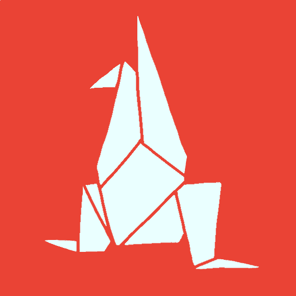
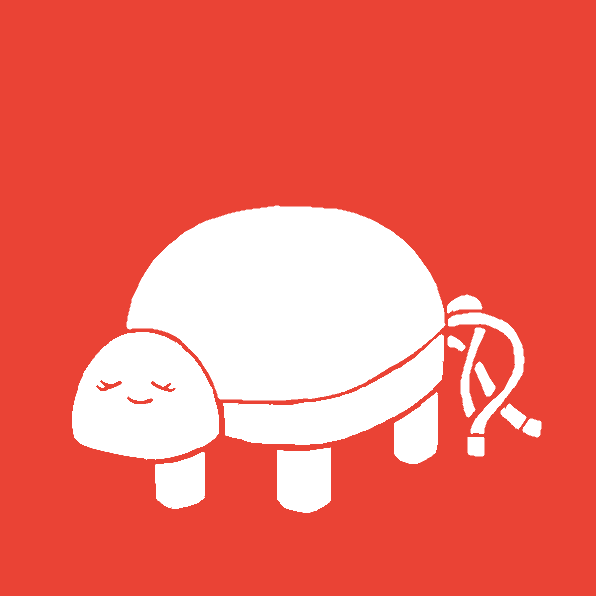

キモづるを愛し、キモづるにそれなりに愛された変な人達のウェブサイト
キモづる同好会は キモづるを愛でる､ 新たなキモづるを制作するとともに 「人類キモづる化計画」 とまではいかなくても 「キモッ､おもろ」 といろんな人に思ってもらいたいを 目標に活動しています｡


キモづるぬいぐるみ「キモぬ」制作過程
のたうち回るキモづる制作過程
ラジオ出演について
とうほくプロコン2024について
Webサイト立ち上げ